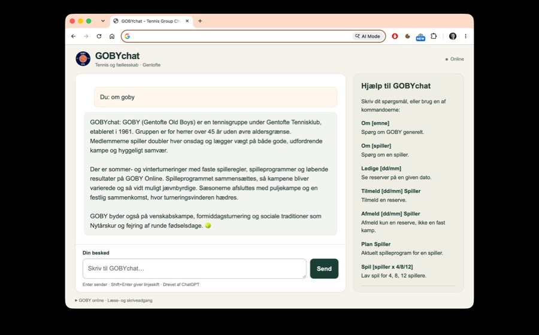
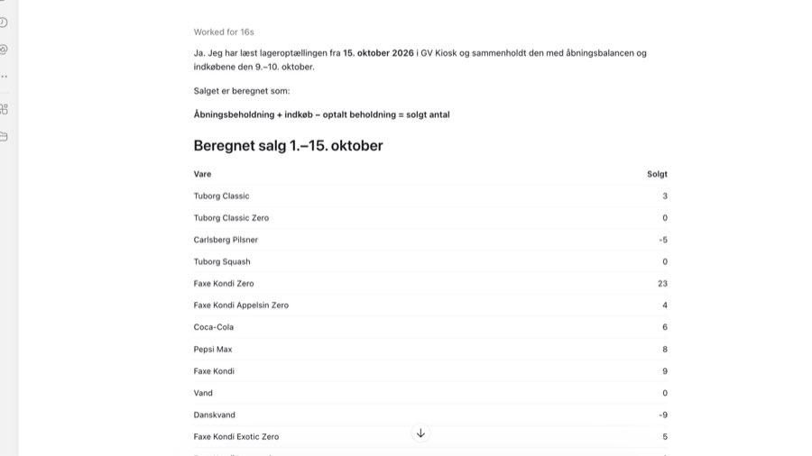
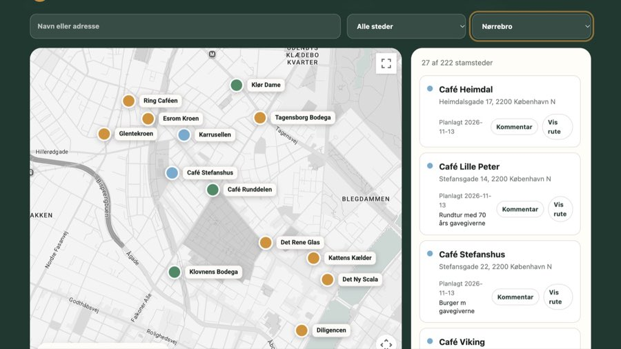

Creative & thoughtful
Every solution starts with a real need and is shaped with care for its context.
Developer portfolio
A curated selection of projects spanning sport and club operations, career development, administration and communication.
Selected work
Project descriptions contain public information only. More detail and selected documentation can be added over time.

AI-powered chat for matches, substitutes, rules, players and match planning.
Live since Sep 2025A public website for a professional delivery assurance network.
Live since Dec 2025
An agent that processes job postings and searches 90–100 career sites.
Live since Nov 2025 · Evolving
AI-assisted inventory, sales and purchasing for Gentofte Volley league matches.
Live since Oct 2026An agent that processes the family’s receipts in a systematic workflow.
In development
A website for managing visits to favourite venues and asking a friend.
Launching Nov 2026The approach
Across work and leisure, the projects turn practical needs into secure, accessible and cost-efficient digital solutions.
Every solution starts with a real need and is shaped with care for its context.
Features can serve one person or scale into intuitive multi-user communities.
Built on current technologies with growth, reliability and privacy in mind.
Designed to create lasting value without unnecessary infrastructure or operating cost.